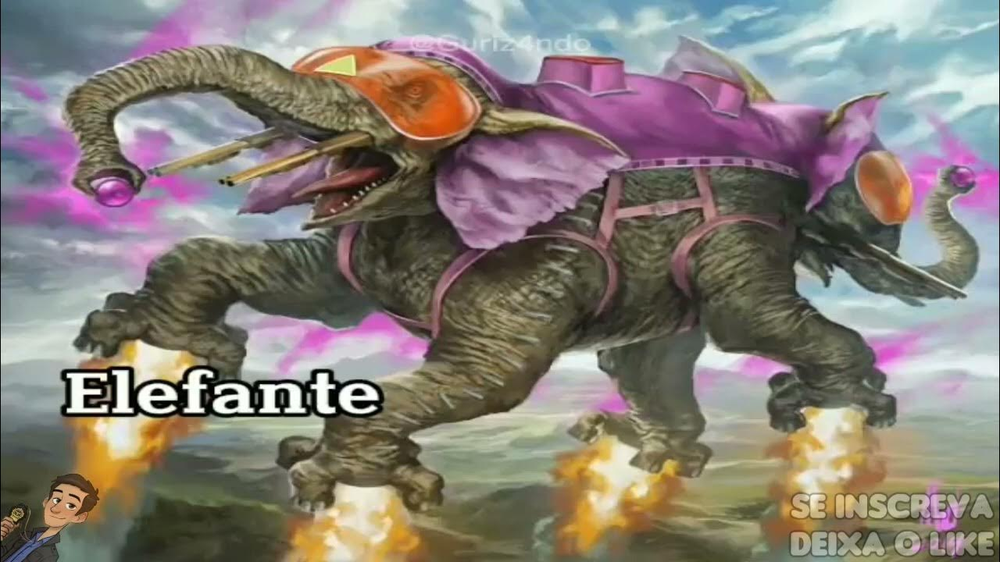
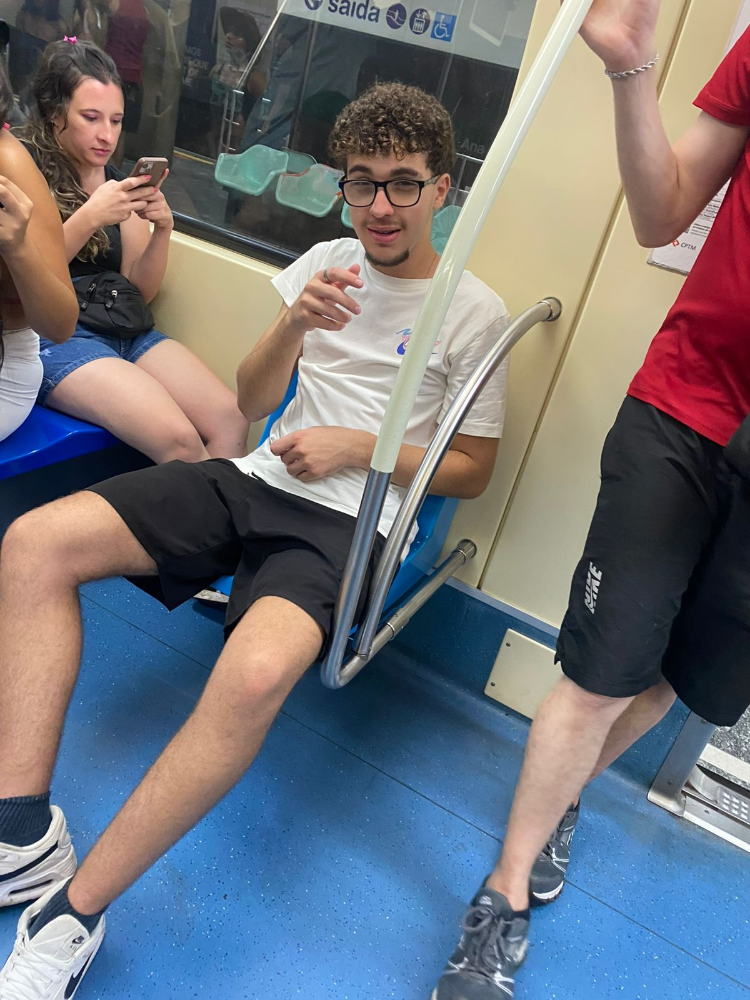
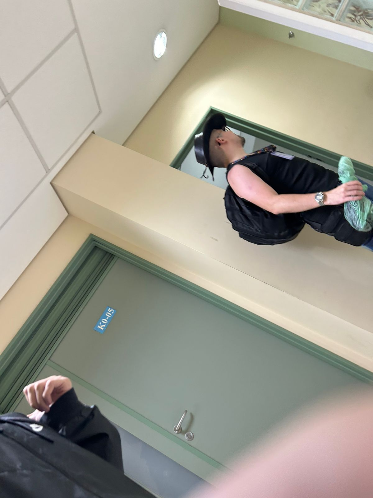

A ascenção

Habilidades psíquicas:
Ele possui poderes psíquicos que permitem comunicação mental e controle de situações complexas. Apenas indivíduos considerados dignos podem comandá-lo, e ele avalia a pessoa antes de permitir o controle. Essa característica é central para sua interação com Finn e Jake, que precisam provar sua dignidade para utilizá-lo.
Coisas
-Monstro fraz se fingindo de deficiente pra sentar no banco especial

-Cowboy louco da fei

-Tênis pica que to desejando

-Os caras aproveitando o bloco cu pelas ruas de SP

-Buck o colosso